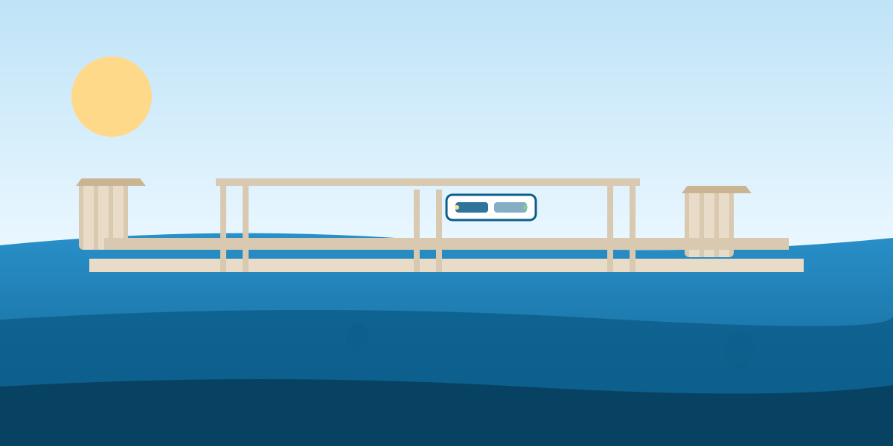

Zhuhai is a transport hub by design — Hong Kong, Macau, and Shenzhen are all within about an hour. This guide picks your cheapest, fastest, or most comfortable route, step by step.
Live checks this week: Golden Bus fares, Gongbei queue times, ferry schedule.

| From | Option | Time | Price | Comfort | Verdict |
|---|---|---|---|---|---|
| Hong Kong | Golden Bus (bridge) | ~45 min | HK$120 | ★★★★ | Best all-round |
| Hong Kong | Ferry | ~70 min | HK$180 | ★★★ | Scenic, more scenic seats |
| Hong Kong | HSR + transfer | ~90 min | HK$150 | ★★★★★ | Comfortable, extra connection |
| Macau | Walk via Gongbei | 15 min | Free | ★★★★★ | Easiest, literally |
| Macau | Bus | 20 min | ¥3–5 | ★★★ | Cheap short hop |
| Shenzhen | Ferry (Shekou) | 60 min | ¥120 | ★★★ | Nice, pricier |
| Shenzhen | High-speed rail | 75 min | ¥80 | ★★★★★ | Best value & comfort |
This is how I bring friends over. Direct, one seat, straight across the Hong Kong–Zhuhai–Macau Bridge.
The cross-border coaches run direct from Hong Kong International Airport and China/HK ferry terminals, crossing the Hong Kong–Zhuhai–Macau Bridge — the world's longest sea bridge. Land in Zhuhai downtown (~45 min driving) with one transfer of buses at the border.
This is my favorite "wow, that easy?" moment for guests. You can literally walk from Macau to Zhuhai.
Can't find your hotel at 2am? Baggage issues? Need a pickup? Our local 24h line sorts it out.
24h Emergency Help¥200–300 RMB covers taxis, snacks, and small purchases; everything else is Alipay/WeChat. HK dollars are less useful on the mainland — exchange early if you're coming from HK/Macau.
Yes with a valid mainland import inspection + paperwork; always confirm both sides before crossing. Ferries are stricter than the bridge.
Yes. Bridge bus has accessible seats and staff; Gongbei walkway is ramped; HSR is wheelchair friendly. Tell the operator 48h ahead where possible.
Children cross on their own passport or a visa-required country — check visa rules (Z visa-free and 72h transit apply to many nationals). Kids under 16 can't typically use e-gates.
Many nationalities get 30–60 day visa-free entry to China mainland (2026). 72-hour visa-free transit applies when continuing to a third country. Always confirm your exact nationality/date before travel.
Hotel room unsatisfactory, apartment dirty, appliance dead — one call, 2-hour response.
Book a Service